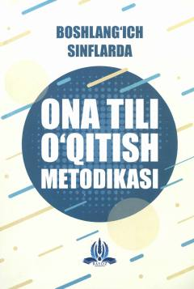

BSBoshlang'ich sinflarda ona tili o'qitish metodikasi bo'yicha bo'lajak o'qituvchilar uchun mo'ljallangan darslik.
Mazkur darslikda boshlang'ich sinf ona tili o'qitish metodikasi kursining maqsad va vazifalari, savod o'rgatish, o'qish, grammatika, fonetika va nutq o'stirish metodikasi batafsil bayon qilingan. Shuningdek, nazariy bilimlarni amaliyotga tatbiq etish usullari va zamonaviy yondashuvlar yoritib berilgan. Kitob boshlang'ich ta’lim fakulteti talabalari va o'qituvchilar uchun mo'ljallangan.